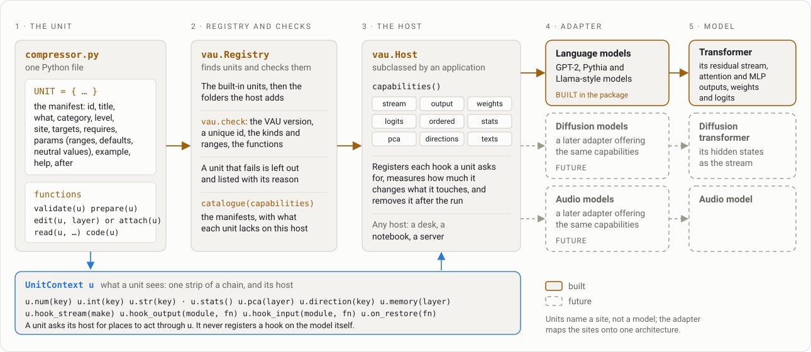
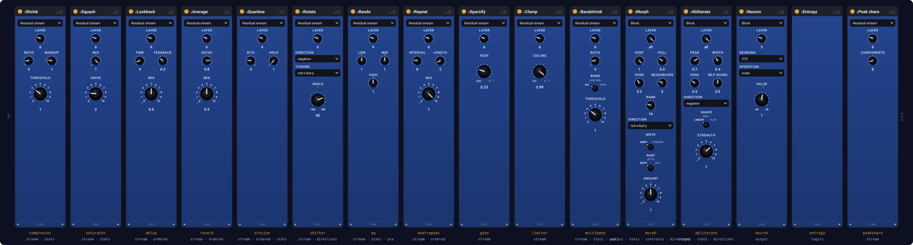
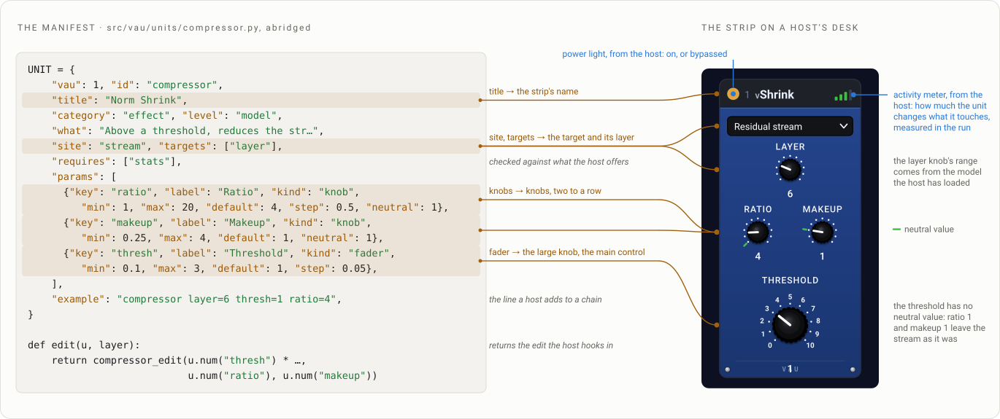

What it is
A Vector Abliteration Unit is one Python file. It declares what it is (a manifest: its name, its parameters, the kind of place in a model it acts on, what it needs) and supplies a few functions. A host finds units, checks them, and runs the ones a user chains together.
The split is inspired by audio plugins such as Steinberg's VST, where a plugin declares its controls and a host decides where it runs.
A unit never touches the model directly. It asks its host for a place to act (the residual stream at a layer, the output of an attention layer), and the host registers the hook, measures how much it changes what it touches, and removes it after the run. Units name a kind of place, not a model. The host's adapter maps those places onto an architecture, so the same unit can run in a language model now and in a diffusion or audio model later.

The standard is in SPEC.md. The package vau implements the host's side; src/vau/units/ holds the built-in units, the Core Collection.
The Core Collection
The units the package ships are the Core Collection, sixteen of them: effects that act on the stream (vNorm Shrink, vTanh Squash, vLookback, vRunning Average, vQuantise, vRotate, vPrincipal Bands, vSparsify, vPosition Repeat, vBand Shrink and vComponent Clamp); vAbliterate, which removes a direction from what attention and MLPs write over a span of blocks; vMorph, a unit fitted to a direction's texts that changes what they write; vNeuron, which edits named MLP neurons; and two meters, vEntropy and vPeak share. Each declares the settings at which it changes nothing, and the tests check that those settings give back the stream unchanged. The units page gives each one's parameters, ranges and neutral values, its help text, and the function it runs.

tools/build_site.py.vNorm Shrink
Above a threshold, reduces the stream's size at each position by a ratio.
stream · needs stream, statsvTanh Squash
Soft-clips each dimension of the stream, harder as the drive rises.
stream · needs stream, statsvLookback
Adds the stream from some positions back: an echo, with feedback.
stream · needs stream, orderedvRunning Average
Adds a decaying average of the earlier positions.
stream · needs stream, orderedvQuantise
Quantises the stream to few levels, or holds it over several positions.
stream · needs stream, ordered, statsvRotate
Rotates the stream in the plane of two directions.
stream · needs stream, directionsvPrincipal Bands
Scales three bands of the stream's principal directions: low, mid, high.
stream · needs stream, stats, pcavPosition Repeat
In every run of positions, replays the stream of the few positions before over the last few: a stutter.
stream · needs stream, orderedvSparsify
Keeps only each position's largest components and zeroes the rest, making the stream sparse.
stream · needs streamvComponent Clamp
Clamps each position's largest components at a ceiling set by a quantile of their sizes.
stream · inspired by the winsorization of Heretic and OBLITERATUS · needs streamvBand Shrink
Compresses the stream separately in three bands of its principal directions: low, mid, high.
stream · needs stream, stats, pcavMorph
A learned change to what attention and MLPs write, fitted to move one side of a direction's texts toward the other.
component · inspired by the objective of Arbitrary-Rank Ablation in Heretic (Weidmann 2026) · needs output, texts, contrasts, directionsvAbliterate
Removes a direction from what attention and MLPs write, with a strength that peaks at one block and tapers.
component · inspired by directional ablation (Arditi et al. 2024) as abliteration tools apply it, with Heretic's kernel and Lai's refinements · needs output, stats, directionsvNeuron
Scales, adds to, sets, zeroes, flips or clamps single MLP neurons in one block.
hidden · inspired by OBLITERATUS's Neuron Lab · needs outputvEntropy meter
How uncertain the model is about the next token, in bits, step by step.
logits · needs logitsvPeak share meter
The share of the stream's size held by its few largest components, step by step.
stream · needs streamThe collection's look
The Core Collection has a look of its own, which the package ships as one stylesheet (vau.look_files(), SPEC.md, section 5d): studio hardware, photographed rather than drawn. A deep blue enamelled faceplate with chrome screws, black fluted knobs with white pointers in a ring of printed dots, white legends in light capitals, red jewel lights, and meters as backlit amber faces with needles. A host draws each unit's strip with its own frame and top line (power, name, help and output summary, which VAU fills with the unit's help and suggested readings) and puts the unit's controls on a card inside it. On the card of a unit in the collection, marked vau-core, the stylesheet sets the --vu-* properties the host draws with, and the host adds a small VAU at the foot. Other collections can have looks of their own. Below, two units' cards, drawn live by VAU's card runtime as a host would mount them: turn the knobs and the selector. No model runs on this page, so the cards change only themselves; in a host they change the model, and on the units page turning one shows GPT-2 small's text at the nearest setting it was run at.
Host features
Every unit also has four controls the host applies around its change (SPEC section 5a): wet, an envelope over the depth (linear, bell or flat), keep size, and a random control that replaces each direction with a random one of the same size.
Planned next
- Adapters beyond language models: diffusion and audio models.
Writing a unit
A unit is a manifest and a function or two. A host draws a strip from the manifest: a knob for each knob or int parameter, the main control for the one fader (in the Core Collection a large knob), a menu for a target, a direction or a choice. It adds a power light and an activity meter to every strip.

The smallest unit multiplies the stream by a number:
UNIT = {
"vau": 1, "id": "gain", "title": "Gain", "what": "Multiplies the stream by k",
"category": "effect", "level": "model", "site": "stream", "targets": ["layer"],
"params": [{"key": "k", "label": "k", "kind": "fader", "min": 0, "max": 4,
"default": 1, "neutral": 1}],
"example": "gain layer=6 k=2",
}
def edit(u, layer):
k = u.num("k")
return lambda h, pos: h * kPut the file in your host's user folder and it appears with the Core Collection. To check it without a model:
import vau
from vau.testing import conformance
unit = vau.Registry([("my_units", "user")]).load().get("gain")
print(conformance(unit) or "passes")The checks run the unit on a stand-in host with random statistics and directions: its manifest, its example line, that its edit keeps the stream's shape and dtype, and that its neutral values change nothing (SPEC.md, section 7).
A unit is ordinary Python, so loading one runs it. Hosts load units only from local folders and mark those that are not built in.
Using it in a host
pip install -e . # or, from a host: pip install "vector-abliteration-units @ git+https://github.com/vector-lab-tools/vector-abliteration-units" python -m pytest -q ............... [100%] 15 passed
A host subclasses vau.Host, says what it offers in capabilities(), and calls vau.validate, vau.prepare, vau.attach and vau.code for each unit in a chain. vau.Registry(...).catalogue(capabilities) gives its interface the manifests, with what each unit lacks on the loaded model.
A host reaches a model through an adapter, which maps a unit's site onto one architecture: the package's adapter covers GPT-2, Pythia and Llama-style language models. How a host lays a chain out (a desk of strips, a notebook, a server) is up to it.
Where the name comes from
"Abliteration" is the community's word for removing a direction from a model's weights or activations. It comes from the work that followed Arditi et al. (2024), who showed that refusal in chat models is mediated by a single direction in the residual stream. The two early community implementations were FailSpy's abliterator and Sumandora's remove-refusals-with-transformers. The second works through plain Hugging Face Transformers hidden states, which is why most later tools descend from it.
Maxime Labonne's Hugging Face article, "Uncensor any LLM with abliteration" (2024), carried the term further and is the inspiration for this project's name. In that literature the word means one operation, removing a refusal direction. VAU uses it in an extended sense, for any unit that changes what a model computes while it runs. Most of the units remove no direction (they rotate, compress, echo, add noise or apply a fitted change), the meters only read, and the units run on models never trained to refuse, such as GPT-2 small. They are tools for active divergence (Broad et al. 2021), with ablation as one operation among them.
Sources and inspiration
- Arditi, A., Obeso, O., Syed, A., Paleka, D., Panickssery, N., Gurnee, W. and Nanda, N. (2024) Refusal in Language Models Is Mediated by a Single Direction.
- FailSpy, abliterator.
- Sumandora, remove-refusals-with-transformers.
- Broad, T., Berns, S., Colton, S. and Grierson, M. (2021) Active Divergence with Generative Deep Learning: A Survey and Taxonomy, ICCC 2021.
- Labonne, M. (2024) Uncensor any LLM with abliteration, Hugging Face.
- Lai, J. (2025) Projected abliteration and Norm-preserving biprojected abliteration, Hugging Face.
- Weidmann, P. E. (2025) Heretic, including Arbitrary-Rank Ablation. AGPL-3.0: VAU takes ideas from its descriptions, not its code.
- elder-plinius, OBLITERATUS. AGPL-3.0: likewise.
- McGrath, T. et al. (2023) The Hydra Effect: Emergent Self-repair in Language Model Computations.
- Turner, A. et al. (2023) Activation Addition; Rimsky, N. et al. (2024) Steering Llama 2 via Contrastive Activation Addition.
- Ableton Live's audio devices (its compressor, saturator, delay, reverb, erosion, frequency shifter, three-band EQ, gate, beat repeat, multiband dynamics and limiter), which inspired the vNorm Shrink, vTanh Squash, vLookback, vRunning Average, vQuantise, vRotate, vPrincipal Bands, vSparsify, vPosition Repeat, vBand Shrink and vComponent Clamp units, named here for what each does to the vectors; Steinberg's VST, which inspired the split between host and unit. VAU is not affiliated with Ableton or Steinberg.